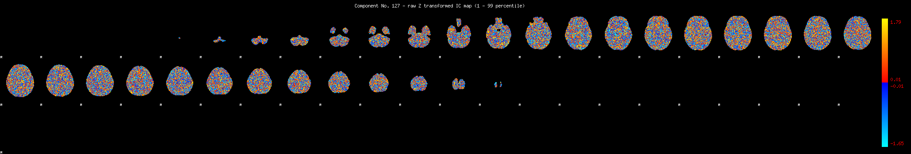
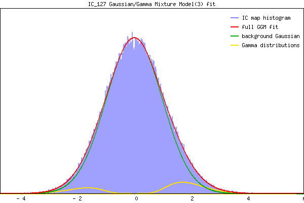

IC_127 Mixture Model fit
Means : -0.000000 1.973202 -1.898381
Vars : 1.000000 0.492486 0.449759
Prop. : 0.932777 0.045154 0.022069
This page produced automatically by MELODIC Version 3.15 - a part of FSL - FMRIB Software Library.